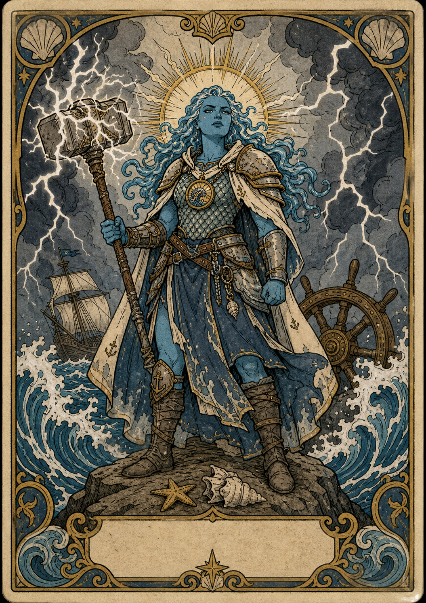

Player Character
Claire
Water Genasi / Cleric (Tempest) / Level 5
AC18
Init-1
Prof+3
Speed30 ft
ClassCleric
SubclassTempest
RaceWater Genasi
BackgroundSailor
Experience8000
Gold0
Hero Points0
Guild RankE
Guild Points51
Strength16+3
Dexterity8-1
Constitution16+3
Intelligence14+2
Wisdom18+4
Charisma12+1
Armor Class18
Initiative-1
Proficiency+3
Speed30 ft
Simple Melee+6
Simple Ranged+2
Martial Melee+6
Martial Ranged+2
Spell Attack+7
Spell Save DC15
Weapon Attacks
Saving Throws
Strength+3
Dexterity-1
Constitution+3
Intelligence+2
Wisdom+7
Charisma+4
Skills
Acrobatics DEX-1
Animal Handling WIS+4
Arcana INT+2
Athletics STR+3
Deception CHA+1
History INT+2
Insight WIS+7
Intimidation CHA+1
Investigation INT+2
Medicine WIS+7
Nature INT+2
Perception WIS+7
Performance CHA+1
Persuasion CHA+4
Religion INT+5
Sleight of Hand DEX-1
Stealth DEX-1
Survival WIS+4
ClassCleric (Tempest)
BackgroundSailor
FeatsElemental Adept
RaceGenasi (Water)
No extra class features recorded.